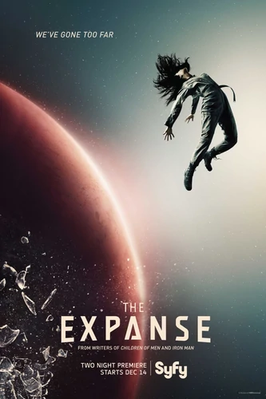

Season 1 Poster
Season One is the first season of Syfy's The Expanse. It premiered on December 14, 2015, and continued airing every Tuesday until February 2, 2016, consisting of ten one-hour episodes. The first episode was pre-released on November 23, 2015 on on-demand and streaming devices.
Production began in September 2014 and concluded on April 2015. Principal filming dates were between October 28, 2014 through March 27, 2015.
The first season is based on roughly 75% of the novel Leviathan Wakes by James S. A. Corey. It was developed for television by Alcon Entertainment.
For more information about this season ...